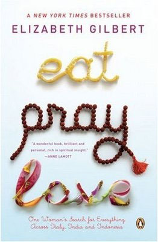
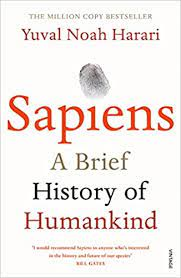

I introduce myself. My name is Juan Pablo, and I'm from Argentina living in berlin with a student visa since a year ago, I'm 29 years old and I'm interested in work with you.
After finishing high school, I started a career in Computer Engineering, and after a year I changed to Computer Systems Analyst.
Unfortunately, after 3 years of study, I had to start working, not being able to finish with these.
In the year 2020, I left Argentina and lived 1 year in Copenhagen, Denmark, the following year, I came to Berlin where I live now.
I am physically prepared for heavy work, and I have good knowledge about electricity and electronics.
I have experience with handling heavy electronic equipment, In Denmark I worked in a scooter repair company, where I and my team were in charge of moving, fixing and registering the batteries of the scooters.
I am studying German, at the moment it is basic, but improving.
Is it possible to have a personal interview to get to know each other?
Thank you very much for your time.
El Nombre Del Viento
Patrik Rothfuss
"El nombre del viento. Crónica del asesino de reyes: primer día es una novela de fantasía épica, perteneciente a la serie Crónica del Asesino de Reyes, escrita por Patrick Rothfuss, escritor estadounidense y profesor adjunto de lengua y filología inglesa en la Universidad de Wisconsin"
Cómo ganar amigos e influir
Dale

Cómo ganar amigos e influir sobre las personas es uno de los primeros best-sellers de autoayuda publicados. Escrito por Dale Carnegie y publicado por primera vez en 1936, se han vendido 15 millones de ejemplares en todo el mundo. Es un libro clásico sobre las relaciones humanas"
Eat pray love
Elizabeth Gilbert

Liz Gilbert pensó que tenía todo lo que ella quería en la vida: una casa, un marido y una carrera exitosa. Pero un día descubre que ya no quiere más esa vida, por lo que decide poner fin a su matrimonio y emprender un viaje de autodescubrimiento que la lleva a Italia, India e Indonesia."
Sapiens
Yuval Noah Harari

"Sapiens. De animales a dioses: Una breve historia de la humanidad es un libro escrito por Yuval Noah Harari, historiador y escritor israelí, publicado originalmente en hebreo en el 2011, y en traducción al inglés, al español y a más de treinta idiomas a partir del 2014."
Breaking Bad
Vince Gilligan, Michael Slovis, Colin Bucksey, MÁS

El profesor calmado de química de una secundaria, Walter White cree que su vida no puede ser peor. Su salario apenas le alcanza para sostener a su familia, una situación que no mejora cuando su esposa da a luz y su hijo adolescente sufre de parálisis cerebral, pero Walter queda anonadado cuando se entera que tiene un cáncer terminal. Al concluir que su enfermedad iba a arruinar financieramente a su familia, él toma una decisión desesperada con el fin de ganar más dinero durante el tiempo que le queda y transforma un viejo vehículo de recreación en un laboratorio de matanfetaminas sobre ruedas.
Big Mouth
Nick Kroll, Andrew Goldberg, Mark Levin, Jennifer Flackett
Amigos conversan sobre las desventuras de la pubertad y sobre las experiencias de la vida real de los adolescentes en los suburbios de la ciudad de Nueva York.
Los Simpson
Matt Groenning

La comedia de dibujos animados se centra en una familia que vive en la ciudad de Springfield. La cabeza de la familia Simpson es Homero, quien no es un hombre de familia típico, obrero de una planta nuclear, él hace lo mejor para poder liderar a su familia.
Avatar: la leyenda de Aang
Michael Dante DiMartino, Bryan Konietzko
Un chico de 12 años y sus amigos deben usar sus poderes para salvar al mundo del maléfico Señor del Fuego y traer paz para las tres naciones.